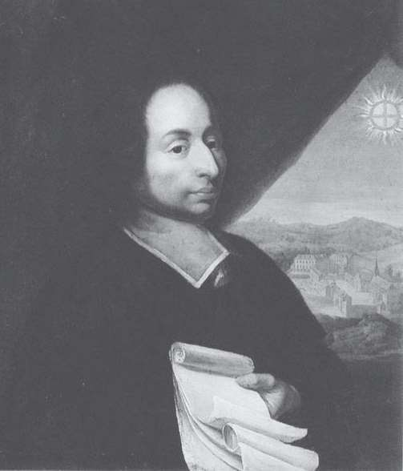
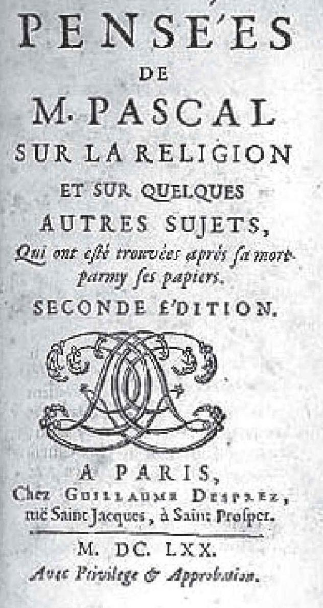

12世纪以来，欧洲人通过阿拉伯人，从中国人那里学会了如何制造麻纸和绵纸，以取代羊皮纸和纸草纸。大约在1450年，古腾堡（J.Gutenberg，1397—1468）发明了活字印刷术。从此，数学、天文学方面的著作开始大量印刷出版了。1482年，拉丁文版的《几何原本》首次在威尼斯付印。此外，欧洲人还从中国引进了指南针和火药，前者使得远洋航行成为可能，后者则改变了战争的方式和防御公事的结构、设计，使得研究抛射体的运动变得十分重要。
在大量希腊著作传入的同时，古希腊人的生活风尚也在欧洲尤其是意大利传播开来。例如，对大自然的探讨、对理性的崇尚和依赖、物质世界的享受、力求身心的完美、表达的欲望和自由，等等。其中，艺术家们最先表示出对自然界的兴趣，并最先认真地运用希腊人的学说，即数学是自然界真实的本质。他们通过实践来学习数学，尤其是几何学，因此产生了像阿尔贝蒂、达·芬奇这样的文艺复兴式人物。阿尔贝蒂对数学的兴趣和研究还直接推动了一个数学分支——射影几何学的诞生。
由于演绎推理的广泛应用，自然科学变得更加数学化，越来越多地使用数学术语、方法和结论。与此同时，随着各门科学与数学的进一步融合，它们自身的发展进程也越来越快。从伽利略到笛卡尔，他们都认为世界是由运动的物质组成的，科学的目的是为了揭示这些运动的数学规律，牛顿的三大运动定律和万有引力定律便是这方面最好的范例。
微积分作为欧几里得几何学之后数学领域中最重要的创造，它的出现有着深刻的社会背景。首先，它是为了处理和解决17世纪几个主要的科学问题，包括物理学、天文学、光学和军事科学；其次，它也是数学自身发展的需要，例如求解曲线的切线问题。与此同时，随着解析几何的出现，变量进入数学领域，使得运动和变化的定量表述成为可能，从而为微积分的创立奠定了基础。
伟大的数学是由伟大的数学家创立的，17世纪也因此成为“天才的世纪”（阿尔弗雷德·怀特海语）。可以说，在人类文明的发展史上，17世纪发挥着非常关键的影响力，究其原因，一方面，数学的拓展和深入起到了主要作用，尤其是微积分和解析几何的诞生。另一方面，继古希腊之后，数学与哲学又一次相遇，产生了多位文理贯通的大思想家，如笛卡尔、帕斯卡尔、莱布尼茨，书写了辉煌的历史篇章。
这里我想谈谈笛卡尔（R.Descartes，1596—1650）和帕斯卡尔（B.Pascal，1623—1662）这两位法国人的成长经历。他们俩（还有费尔马）都出生在外省，幼年丧母，从小体弱多病。幸好，他们的父亲为他们提供了良好的教育，但他们对数学的兴趣却完全是自发的。从未受过相关训练的帕斯卡尔在12岁那年推导出几何学中的一条公理，即三角形的三个内角和等于两个直角。之后，身为业余数学家的父亲才开始教他欧几里得几何。而笛卡尔是在荷兰当兵期间，看到军营黑板报上的数学问题征解才对数学产生兴趣的。

帕斯卡尔肖像

帕斯卡尔的《思想录》
在完成主要的数学和科学发现之后，笛卡尔和帕斯卡尔都不愿享受这些发现带来的荣誉，而是不约而同地把对数学和科学的兴趣转向精神世界。笛卡尔写出了《方法论》《论世界》《第一哲学的沉思》和《哲学原理》，帕斯卡尔则留下了《致外省人信札》和《思想录》。不同的是，由于伽利略的受审和被定罪，笛卡尔更多地沉湎于形而上学的抽象，这对哲学有利而对科学不利；而帕斯卡尔由于笃信宗教和爱情的缺失，字里行间蕴含了更多的虔诚和情愫，为法国乃至世界文学史增添了迷人的篇章。
笛卡尔是把哲学思想从传统哲学的束缚中解放出来的第一人，后辈尊其为“近代哲学之父”。作为彻底的二元论者，笛卡尔明确地把心灵和肉体区分开来，其中心灵的作用如同其著名的哲学命题所表达的——“我思故我在”，这是哲学史上最有力的命题之一。因为在此以前，包括毕达哥拉斯在内的古希腊先贤都认为，世界是由单一物质组成的。相比之下，帕斯卡尔对人类的局限性有着充分的理解，他很早就意识到人类的脆弱和过失。对他来说，无穷小或无穷大都让他感觉到惊诧和敬畏，他的数学发现也是在有限的空间里得到的。
这里我想说说帕斯卡尔三角形和数学归纳法。虽说印度人、波斯人和中国人等早就发现了这个整数三角形的许多有趣的性质，但帕斯卡尔却是第一个用数学归纳法给出严格证明的人，例如，n行第k个元素与第k+1个元素之和等于n+1行第k+1个元素。这可能也是数学归纳法做出的首次明确清晰的阐述，它后来常被用来证明与数，特别是正整数的无限集合有关的命题。这是用有限达到无限的有效手段，数学归纳法的雏形可以追溯到欧几里得对素数无穷性的证明，其名称则是由19世纪的英国数学家、哲学家德·摩根所赐。
笛卡尔和帕斯卡尔都是横跨科学和人文两大领域的巨人，在他们的感召和影响之下，数学成为法国人心目中传统文化的组成部分，并且是最优秀的部分。事实上，17世纪以来的法国数学长盛不衰，大师层出不穷。以浪漫和优雅著称的法国人以此为荣，但不把数学当作敲门砖。自从1936年菲尔兹奖设立以来，已有11位法国人获此殊荣，仅次于美国（13位）。
正因为受到法国数学和人文氛围的熏陶，滞留巴黎的莱布尼茨成了罗素赞叹的“千古绝伦的大智者”，他不仅发明了微积分，也创立了具有广泛影响的“单子论”。莱布尼茨声称，宇宙是由无数个在不同程度上与灵魂相像的单子组成的，这种单子是终极的、单纯的、不能扩展的精神实体，是万物的基础。这意味着人类与其他动物的区别只是程度上的不同，生物与非生命存在物的区别亦如此。莱布尼茨指出，引发我们行为的因素通常是潜意识，这就意味着我们比自己想象的更接近于动物。但他认为，所有事物都是相互联系的，“任何单一实体都与其他实体相联系”。